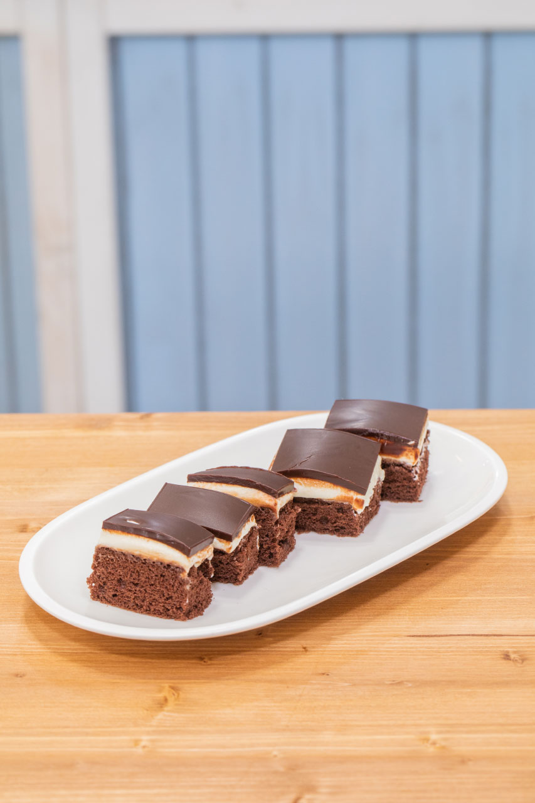
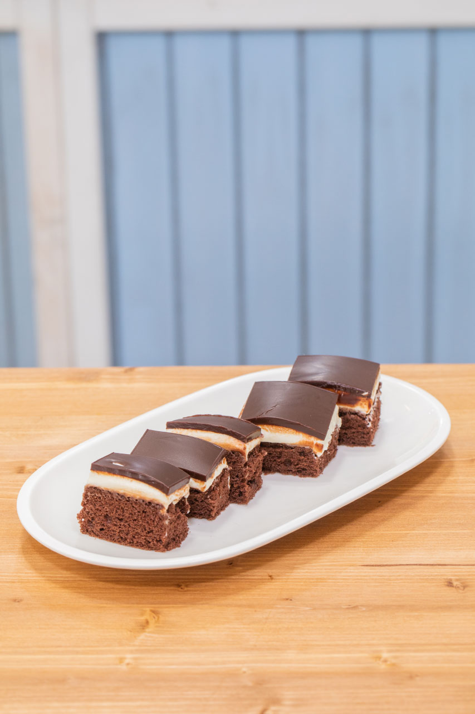

„Míša řezy, to je taková česká klasika. Myslím, že většina lidí je zná. Ohromně ‚žravá‘ dobrota. I když se to nezdá, tento recept je poměrně náročný na čas. Je dobré nespěchat a jednotlivé kroky v klidu pořádně v lednici vychladit. To bylo kvůli vražednému časovému limitu docela problematické. I když to v soutěži nedopadlo úplně ideálně, tak se na nevyužitou část plechu vrhl po natáčení skoro celý štáb, což pro mě bylo dostatečné uznání.”
Korpus
6 vajec
2 lžíce rostlinného oleje
6 lžic polohrubé mouky
1 lžíce prášku do pečiva
3 lžíce kakaa
6 lžic cukru krystalu
Utřeme žloutky s cukrem, přidáme olej, kakao, mouku s kypřícím práškem a vyšlehané bílky. Vymícháme vláčné těsto, dáme ho na vymazaný a vysypaný plech a pečeme ve středně vyhřáté troubě. Nepeče se dlouho, jestli je už korpus hotový zkoušíme špejlí. Poté necháme vychladit.
Krém
250 g másla
hnědý rum podle chuti
500 g tvarohu
150 g cukru
Smícháme všechny suroviny dohromady a vyšleháme.
Poleva
100 g másla
120 g čokolády
trochu polotučného mléka
Ve vodní lázni rozpustíme máslo, v něm čokoládu a rozmícháme do hladké hmoty. Za stálého míchání přidáme lžíci mléka. Polevu nanášíme na studený krém.
Sestavení
Na vychlazený korpus na plechu úhledně namažeme krém.
Dáme opět vychladit.
Na vychlazenou vrstvu krému nalejeme polevu a rozetřeme do hladka.
Dáme opět vychladit.
Pokud jsme schovali trochu polevy a chceme za její pomoci na povrch řezů napsat nějaký text nebo nakreslit obrázek, děláme tak vždy až na vychlazenou polevu.
 
